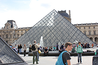

Paris à Pied started out as a personal journal of the most amazing vacation I have ever had with my husband, Scott. Apparently, I have a reputation for being a detailed planner (polite way of saying "total type A personality"). Soon friends started asking me for copies of my Paris journal that included all the famous sights we visited, great restaurants and fun things to do. They could not believe how easy it was to navigate this tremendous city on foot using the apps and transportation tips I shared with them.
Famous Sights
L'Arche de Triomphe
L'Arche de Triomphe
The Arc de Triomphe de l'Étoile is one of the most famous monuments in Paris. It stands in the centre of the Place Charles de Gaulle (originally named Place de l'Étoile), at the western end of the Champs-Élysées.[3] It should not be confused with a smaller arch, the Arc de Triomphe du Carrousel, which stands west of the Louvre. The Arc de Triomphe (in English: "Triumphal Arch") honours those who fought and died for France in the French Revolutionary and the Napoleonic Wars, with the names of all French victories and generals inscribed on its inner and outer surfaces. Beneath its vault lies the Tomb of the Unknown Soldier from World War I.
Wikipedia
Symbol of Paris
Le Tour Eiffel
The Eiffel Tower (French: La Tour Eiffel, [tuʁ ɛfɛl]) is an iron lattice tower located on the Champ de Mars in Paris. It was named after the engineer Gustave Eiffel, whose company designed and built the tower. Erected in 1889 as the entrance arch to the 1889 World's Fair, it has become both a global cultural icon of France and one of the most recognizable structures in the world.[1] The tower is the tallest structure in Paris and the most-visited paid monument in the world; 6.98 million people ascended it in 2011.[2] The tower received its 250 millionth visitor in 2010.[2]
Wikipedia
Our Lady of Paris Cathedral
Notre-Dame de Paris
Notre-Dame de Paris (IPA: [nɔtʁə dam də paʁi]; French for "Our Lady of Paris"), also known as Notre-Dame Cathedral or simply Notre-Dame, is a historic Catholic cathedral on the eastern half of the Île de la Cité in the fourth arrondissement of Paris, France.[2] The cathedral is widely considered to be one of the finest examples of French Gothic architecture and among the largest and most well-known church buildings in the world. The naturalism of its sculptures and stained glass are in contrast with earlier Romanesque architecture.
Wikipedia

The Louvre
Musee du Louvre
The Louvre or Louvre Museum (French: Musée du Louvre, pronounced: [myze dy luvʁ]) is one of the world's largest museums and a historic monument. A central landmark of Paris, France, it is located on the Right Bank of the Seine in the 1st arrondissement (district). Nearly 35,000 objects from prehistory to the 21st century are exhibited over an area of 60,600 square metres (652,300 square feet). With more than 9.7 million visitors each year, the Louvre is the world's most visited museum.[6]
The museum is housed in the Louvre Palace (Palais du Louvre), originally built as a fortress in the late 12th century under Philip II. Remnants of the fortress are visible in the basement of the museum. The building was extended many times to form the present Louvre Palace. In 1682, Louis XIV chose the Palace of Versailles for his household, leaving the Louvre primarily as a place to display the royal collection, including, from 1692, a collection of ancient Greek and Roman sculpture.[7] In 1692, the building was occupied by the Académie des Inscriptions et Belles Lettres and the Académie Royale de Peinture et de Sculpture, which in 1699 held the first of a series of salons. The Académie remained at the Louvre for 100 years.[8] During the French Revolution, the National Assembly decreed that the Louvre should be used as a museum to display the nation's masterpieces.
Wikipedia
Entertainment
Relax on the Seine
Les Bateaux Mouches
Bateaux Mouches (French pronunciation: [bato ˈmuʃ]) are open excursion boats that provide visitors to Paris, France, with a view of the city from along the river Seine.[1]
Since the Seine is centrally situated in Paris, a boat tour covers a great deal of the city. Both the Left Bank (Rive Gauche) and the Right Bank (Rive Droite) are visible from the boat. Passengers can see, among other sites, the Eiffel Tower; Notre-Dame Cathedral; the Alexander III Bridge, the Pont Neuf; the Orsay Museum, and the Louvre Museum. Passengers can also see Les Invalides, Napoleon's burial site.
Wikipedia
The Lido Dancers
Le Lido
The Lido is a cabaret and burlesque show establishment on the Champs-Élysées in Paris, France which opened in 1946, famous for its exotic shows, and where Elvis Presley gave an impromptu concert.[citation needed] Other famous names who have performed there include: Edith Piaf, Sylvie Vartan, Johnny Hallyday, Maurice Chevalier, Marlene Dietrich, Josephine Baker, Kessler Twins, Elton John, Laurel & Hardy, Dalida, Shirley MacLaine, Mitzi Gaynor and Noël Coward. Wikipedia
The food is so-so and expensive. Since the Lido is located in the middle of all the action on the Champs Elysee, I recommend ordering a bucket of champagne and then dining at one of the fabulous restaurants on the boulevard.
Rollerblading by Night
All year round, on Friday nights rollerblading Parisians meet up at Montparnasse for a 3 hour ride through the city. The route changes every week so it's a great way for Parisians and visitors to gain an appreciation for what this great city has to offer. It's a long ride through city streets so make sure you are an experienced rollerblader before venturing out. Keep in mind, the city provides police escorts to lead the way so even if you are traveling solo you can feel safe and concentrate on the sights and having fun.
Rollerblade
Takes the guesswork out of figuring out the Paris metro system. The app uses your current location and your desired destination to give you a detailed metro plan.
The best app to shop and book airfare, hotels, restaurants and find entertainment. The best part is you get reviews from other Trip Advisor subscribers and you are welcome to offer your own critique.
Offers exchange rates for 180 different currencies. It's a great way to ensure you are not overpaying when you travel. It's still a good idea to learn what the tipping customs are when you arrive in a new country.
The app offers information for 2300 paintings in the museum including some of it's best known such as the Mona Lisa. It's nearly impossible to see the museum in one day so this helps you select and locate the ones which interest you most.
This 3D application gives you the opportunity to see items in the cathedral that are too high or inaccessible to view. Also provides excellent historical information.